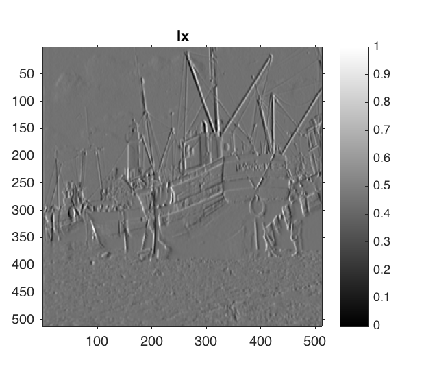

function [] = myHarrisCornerDetector()
S = load('../data/boat.mat');
I=S.imageOrig;
I = I/(max(max(I)));
sigma_1 = 1;
sigma_2 = 1;
I = imgaussfilt(I,sigma_2);
[Ix,Iy] = imgradientxy(I);
Ix2 = Ix.^2;
figure;
imshow(mat2gray(Ix)),colorbar;
title('Ix');
Iy2 = Iy.^2;
figure;
imshow(mat2gray(Iy)),colorbar;
title('Iy');
IxIy = Ix.*Iy;
g = fspecial('gaussian', [6 6] ,sigma_1);
Ix2 = imfilter(Ix2,g,'same');
Iy2 = imfilter(Iy2,g,'same');
IxIy = imfilter(IxIy,g,'same');
[X,Y] = size(I);
eigen1 = double(zeros(X,Y));
eigen2 = double(zeros(X,Y));
Result = double(zeros(X,Y));
k = 0.06
for i=1:X-1
for j=1:Y-1
if(i == 1 || j == 1)
resIx2 = 0;
resIy2 = 0;
resIxIy = 0;
for a=0:1
for b=0:1
resIx2 = resIx2 + Ix2(a+i,b+j);
resIy2 = resIy2 + Iy2(a+i,b+j);
resIxIy = resIxIy + IxIy(a+i,b+j);
end
end
tensor = double(zeros(2,2));
tensor(1,1) = resIx2;
tensor(1,2) = resIxIy;
tensor(2,1) = resIxIy;
tensor(2,2) = resIy2;
e = eig(tensor);
eigen1(i,j) = min(e);
eigen2(i,j) = max(e);
Result(i,j) = (eigen1(i,j)*eigen2(i,j)) - k*(eigen1(i,j)+eigen2(i,j))*(eigen1(i,j)+eigen2(i,j));
else
resIx2 = 0;
resIy2 = 0;
resIxIy = 0;
for a=-1:1
for b=-1:1
resIx2 = resIx2 + Ix2(a+i,b+j);
resIy2 = resIy2 + Iy2(a+i,b+j);
resIxIy = resIxIy + IxIy(a+i,b+j);
end
end
tensor = double(zeros(2,2));
tensor(1,1) = resIx2;
tensor(1,2) = resIxIy;
tensor(2,1) = resIxIy;
tensor(2,2) = resIy2;
e = eig(tensor);
eigen1(i,j) = min(e);
eigen2(i,j) = max(e);
Result(i,j) = (eigen1(i,j)*eigen2(i,j)) - k*(eigen1(i,j)+eigen2(i,j))*(eigen1(i,j)+eigen2(i,j));
end
end
end
Corners = (Result > 0.35);
max(max(Result))
figure;
imshow(mat2gray(eigen1));
title('Minimum eigen value'),colorbar;
figure;
imshow(mat2gray(eigen2));
title('Maximum eigen value'),colorbar;
figure;
imshow(mat2gray(Result)),colorbar;
title('Cornerness measure');
figure;
imshow(mat2gray(Corners)),colorbar;
title('Thresholded Cornerness measure');
figure;
imshow(mat2gray(Corners+I)),colorbar;
title('Cornerness measure superimposed on image');
k =
0.0600
ans =
29.1620
